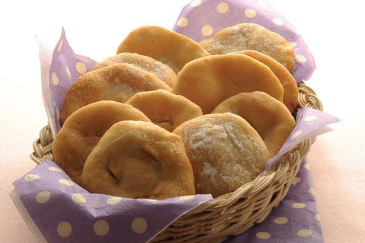
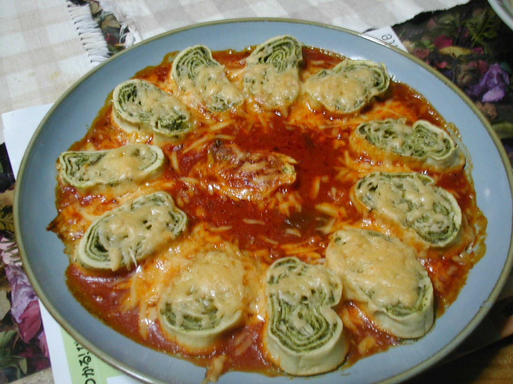

Favoritos:

Historial reciente:
Tortas Fritas
11 de Abril de 2019 Las torta fritas son un plato vespertino, ideal para los días de lluvia, un clásico en el país argentino. Para preparar tortas fritas, necesitaremos los siguientes ingredientes: harina de trigo, sal, grasa de vaca y agua tibia. Para su elaboración debemos mezclar los ingredientes, hasta formar una masa que debe dejarse reposar aproximadamente una hora. Luego, estiramos la masa, hasta obtener un grosor de unos 4 o 5 milimetros. Cortamos la masa de la forma que más nos guste y la freímos en la grasa de vaca. Y así estaremos listos para comer las deliciosas tortas fritas argentinas!
Muy buena receta, me encantó!

Muchas gracias por compartir!
Excelente!
Fideos Rellenos
11 de Abril de 2019 Hoy vamos a presentar uno de los platos más solicitados por la familia: los famosos fideos rellenos. Para su elaboración deberemos hervir acelga, una pechuga de pollo, sin olvidarnos salarlo. Reogamos una cebolla grande y 2 dientes de ajo. Luego, procesamos todo junto y condimentamos con sal, nuez moscada y pimienta. Así tenemos listo el relleno de nuestro fideos. Para la masa, mezclamos harina de trigo, 2 huevos, sal y agua, hasta obtener una masa consistente. Dejamos reposar la masa. Luego la estiramos y la cubrimos con el relleno que preparamos anteriormente. Enrrollamos la masa y envolvemos los rollitos en film. Ponemos a hervirlos durante 45 minutos y luego los cortamos. Agregamos la salsa que se prefiera y se pone queso rallado a gusto. Y así tenemos unos deliciosos fideos rellenos para degustar el domingo en familia!
Riquísimos!
Parecen ser deliciosos. Gran aporte!
Vamos a ir mandando las invitaciones...